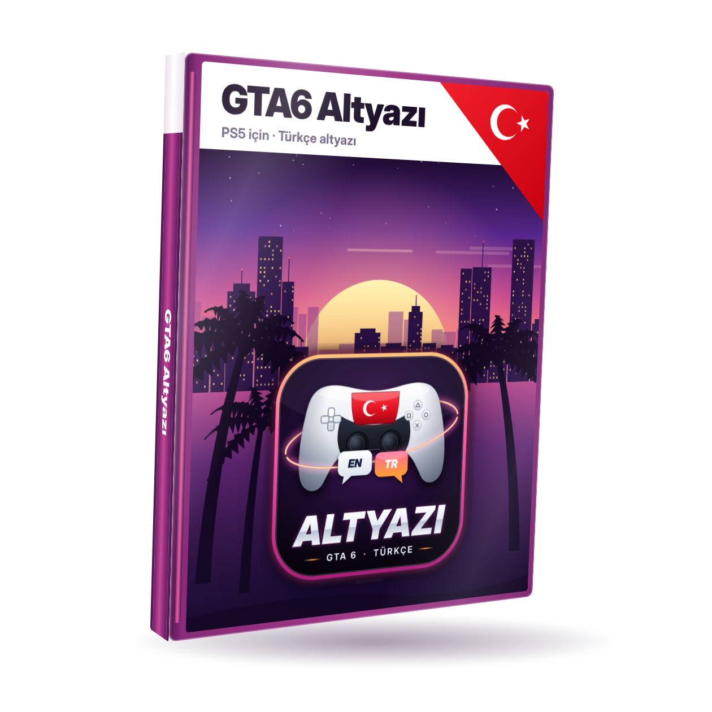

<!doctype html>
<html lang="tr"><head><meta charset="utf-8">
<link rel="stylesheet" href="ortak.css">
<style>
  .bas { position: absolute; left: 0; right: 0; top: 34px; text-align: center; }
  .bas img { width: 104px; height: 104px; filter: drop-shadow(0 10px 18px rgba(61,21,84,.25)); }
  .bas h1 { margin-top: 12px; font-weight: 900; font-size: 46px; letter-spacing: -1.4px; line-height: 1.05; }
  .bas h1 em { font-style: normal; color: #e0457f; background: linear-gradient(90deg, #e0457f 0%, #ff4fa3 45%, #ff8f3a 100%); -webkit-background-clip: text; background-clip: text; -webkit-text-fill-color: transparent; }
  .bas p { margin-top: 8px; font-weight: 700; font-size: 27px; color: var(--mavi); letter-spacing: -0.3px; }
  .kart { top: 270px; height: 520px; }
  .vitrin { position: relative; height: 100%; border-radius: 18px; overflow: hidden; }
  .vitrin .arka { position: absolute; left: -20px; top: -20px; filter: blur(3px) brightness(.85); }
  .vitrin .isik { position: absolute; inset: 0; background: radial-gradient(60% 55% at 42% 55%, rgba(255,255,255,.22), rgba(255,255,255,0) 70%),
    linear-gradient(180deg, rgba(20,8,40,.15), rgba(20,8,40,.35)); }
  .vitrin .kutu { position: absolute; left: 22px; top: -22px; width: 536px; height: 536px; filter: drop-shadow(0 20px 30px rgba(10,0,30,.45)); }
  .vitrin .bot { position: absolute; right: 34px; bottom: 40px; width: 168px; height: 168px; filter: drop-shadow(0 14px 24px rgba(10,0,30,.5)); }
  .vitrin .balon { position: absolute; right: 22px; bottom: 228px; width: 196px; background: #fff; color: #1d1028; font-weight: 900; font-size: 19px;
    line-height: 1.2; padding: 12px 14px; border-radius: 16px 16px 4px 16px; box-shadow: 0 10px 24px rgba(10,0,30,.35); text-align: center; }
  .vitrin .balon span { display: block; margin-top: 4px; font-weight: 700; font-size: 13px; color: #6e5f7d; }
</style></head>
<body>
<script src="ortak.js"></script>
<script>
document.body.innerHTML = `
  <div class="bas">
    <h1>GTA6 Altyazı <em>0.9.3</em> yayında!</h1>
    <p>Oyunlar artık Türkçe.</p></div>
  <div class="kart"><div class="vitrin">
    <div class="arka">${sehir(740, 532, { tohum: 23, gunesX: 0.42, gunesR: 120, ufuk: 0.7, palmiyeler: [[0.03, 1.0, 0.7, 0.14], [0.97, 1.0, 0.64, -0.14]] })}</div>
    <div class="isik"></div>
    
    <div class="balon">Hazırım, hadi başlayalım!<span>Ücretsiz indir, hemen kur.</span></div>
    
  </div></div>
  ${altbilgi()}`;
</script>
</body></html>
